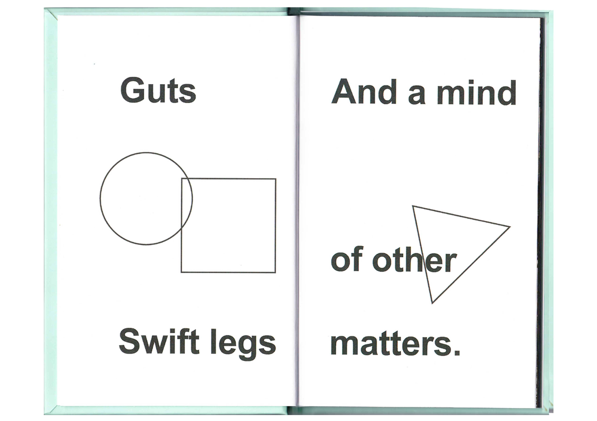
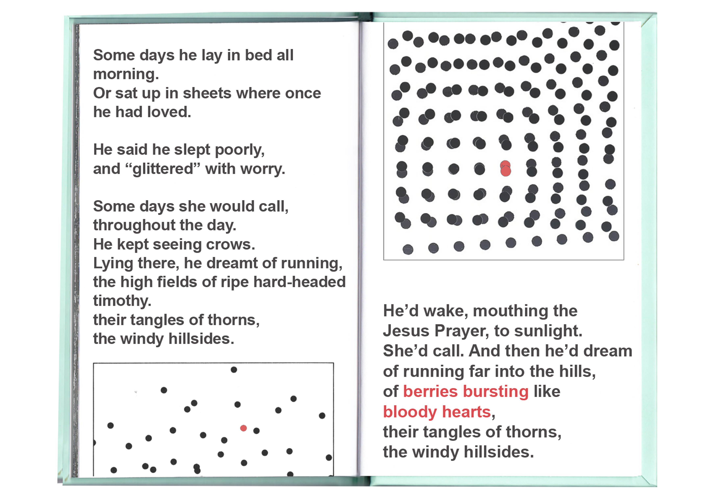

Mudlark (2019):
A revitalisation of an old electronic journal of poetry & poetics from between 1995-1997. Overcoming previous technological barriers to create a modernised look for the outdated aesthetic, this project aimed to combine old imagery and content with new platforms and techniques.


A5 printed on 110gsm paperstock